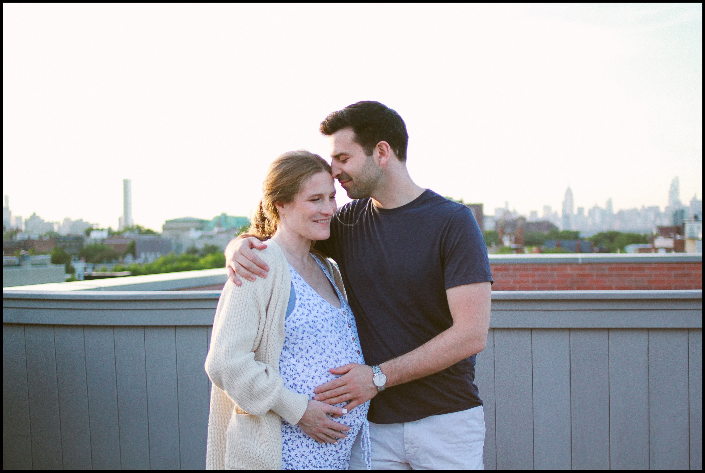
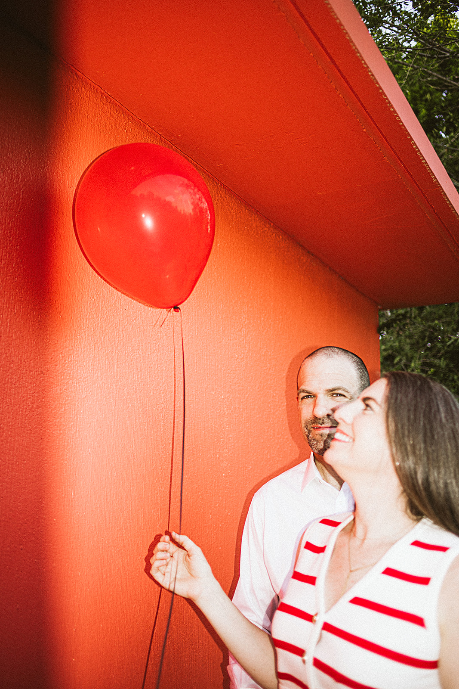
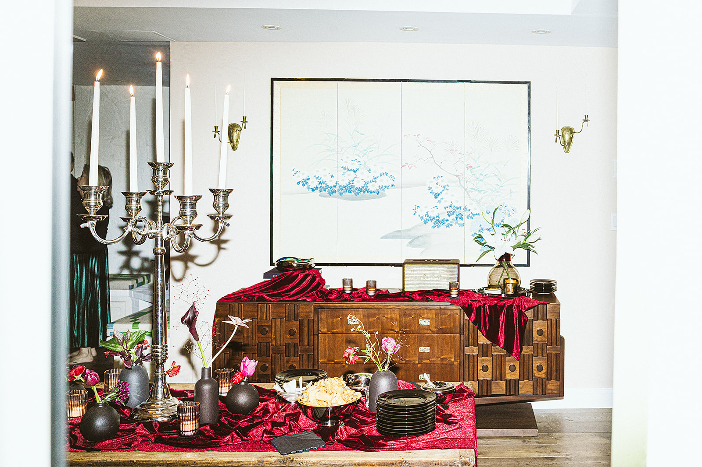
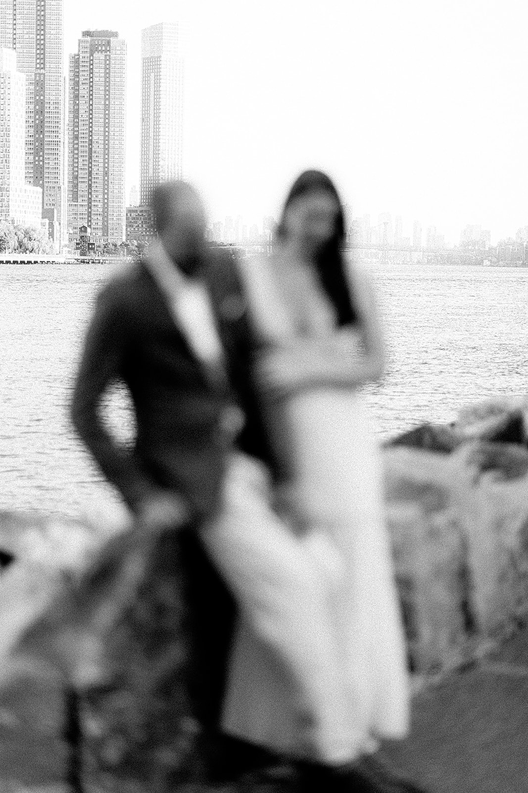
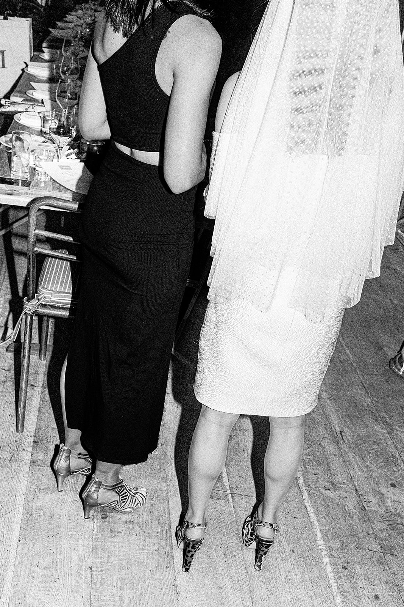
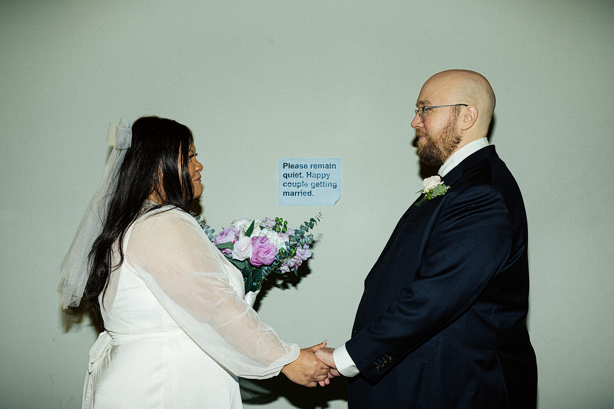
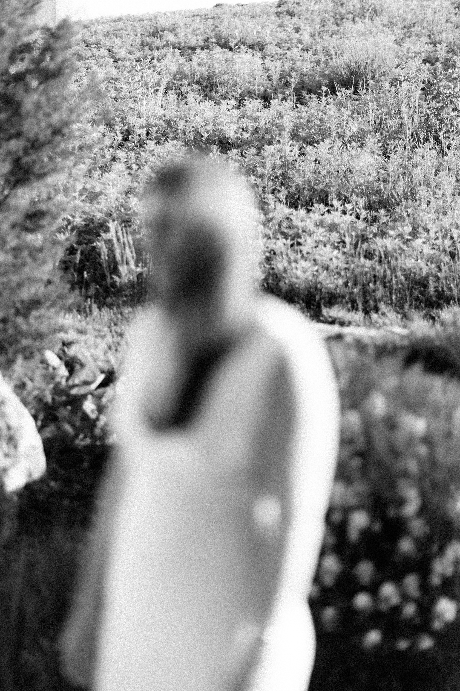
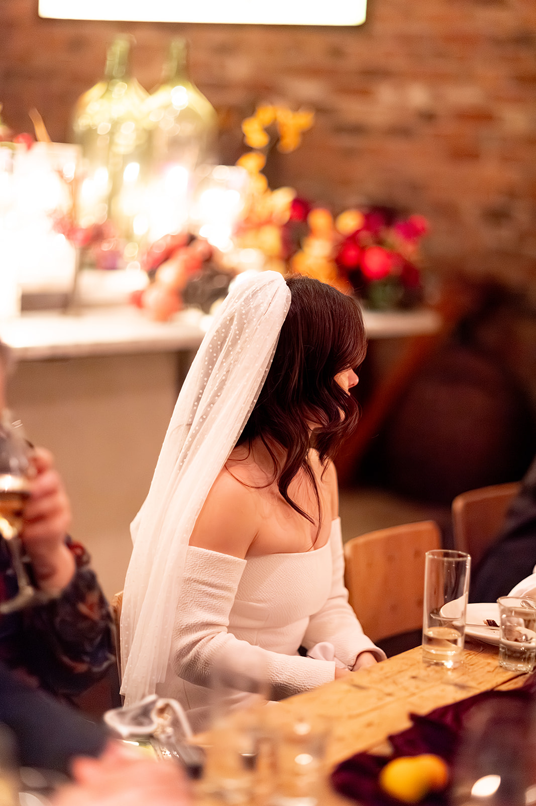
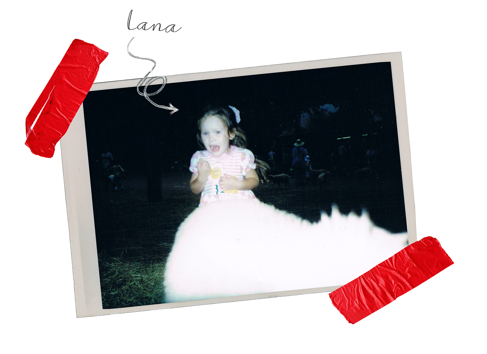

BROOKLYN ELOPEMENT PHOTOGRAPHER
Classic, intimate, documentary-style wedding photography
I blend candid documentary-style photography with artful, composed portraits for a timeless, emotional result.
Get in Touch
I blend candid documentary-style photography with artful, composed portraits for a timeless, emotional result.
Get in Touch
I'm not interested in matching pajama photos or choreographed sunset twirls. Give me the stolen glances, the ugly-laugh moments, the way someone's face completely transforms when they're lost in the music.
I describe my work as classic, intimate, documentary-style with an editorial edge. I blend candid photojournalism with composed environmental portraits for a timeless, emotional result that feels more Vogue than wedding blog.
My focus is on people who think they're "not photogenic." They're wrong, and I'm exceptionally good at proving it. No awkward posing, no forced smiles—just honest captures of you being unapologetically yourselves.









 blue.jpg)







I describe my work as classic, intimate, documentary-style portraits and candids. I blend candid, photojournalistic shots with composed portraits for a timeless, emotional result. My focus is on the people—I shoot those who think they're "not photogenic." They're wrong and I'm good at proving it.
Brooklyn courthouse ceremonies, backyard celebrations, rooftop vows at sunset. I specialize in intimate moments that prioritize connection over convention.
Whether it's just the two of you or your closest twenty people, I'll document every genuine moment with the care and artistry it deserves.
Engagements / Elopements / Intimate Weddings / Couples / Maternity / Family


Hi, I'm Lana Dubkova. I'm obsessed with capturing those perfect in-between moments—the ones that happen when you forget the camera exists.
Raised in NYC as a first-generation Russian-American, I found escapism in fantasy and imagination. I studied photography from high school through the School of Visual Arts and Drexel University.
Given the opportunity, I always choose a timeless black and white photograph as homage to my many days in the darkroom. Film grain, accidental blur, and imperfection aren't errors—they're artistic choices.
